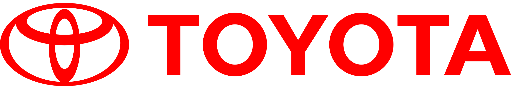
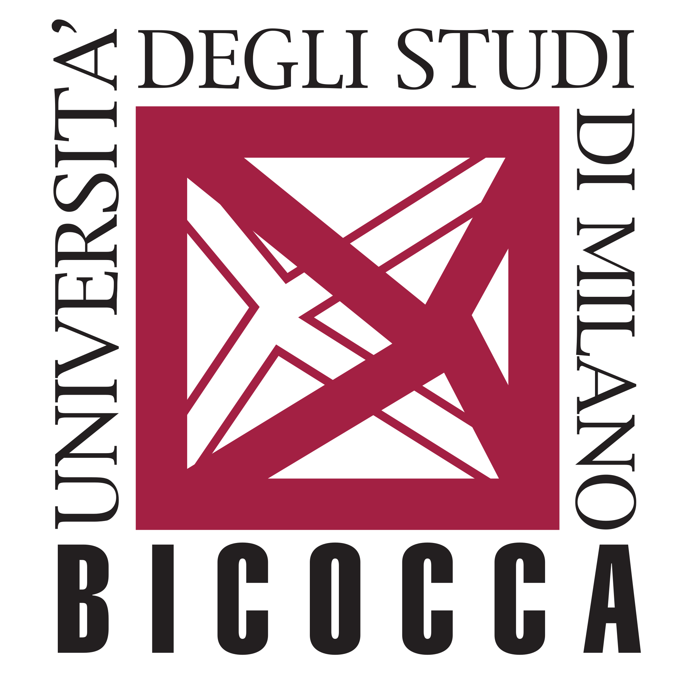
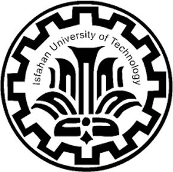
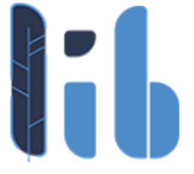
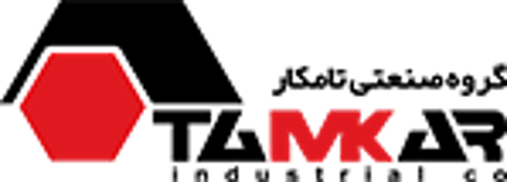

Materials Development Intern
2025Toyota Motor Europe · Zaventem, Belgium
Three months in Toyota’s European R&D hub, contributing to the development of a new 3D-printed material. Project details are confidential.
MATERIALS ENGINEER · DIGITAL MAKER
I’m Iman, a materials engineer exploring how smarter processes and thoughtful design can shape a more sustainable world.
I work where materials science, manufacturing, and sustainability meet.
Currently pursuing a double master’s degree in Sustainable Materials at KU Leuven and the University of Milan-Bicocca. My work moves from powder and microstructure to the real-world processes that make better materials possible.
Along the way, I’ve built for the web, explored design, and learned that the best ideas often happen between disciplines.


Different industries, one shared instinct: understand the material, then imagine what it could become.

Toyota Motor Europe · Zaventem, Belgium
Three months in Toyota’s European R&D hub, contributing to the development of a new 3D-printed material. Project details are confidential.

Libratech IT Solutions · Esfahan, Iran
Built websites and web applications, and designed interfaces for products used in the real world.

Tamkar Industrial Group · Esfahan, Iran
Supported research and supervision while translating and communicating with international partners. Named Intern of the Month.
From laser energy to material behavior, I’m interested in the details that lead to better outcomes.
Studying Gaussian versus ring laser profiles and their effects on microstructure and vaporization in Mn, N-stabilized stainless steel made with laser powder bed fusion.
A review of emerging machine learning methods and their applications in solid-state materials science.
Composites · Biomaterials · Powder metallurgy · AI · Sustainable manufacturing
From 2018 to 2023, I volunteered with Saleh NGO to support orphaned children. At university, I helped bring cultural events, environmental games, and a 1,000+ guest Yaldā Night celebration to life.
Top 1% — National university entrance exam
Top 5% — Materials Engineering GPA, IUT
IELTS 8.0 — English · Persian native
SEM · TEM · XRD · XRF · COMSOL · Thermo-Calc · ImageJ · Python · JavaScript · HTML/CSS